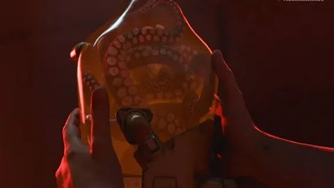
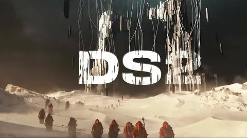
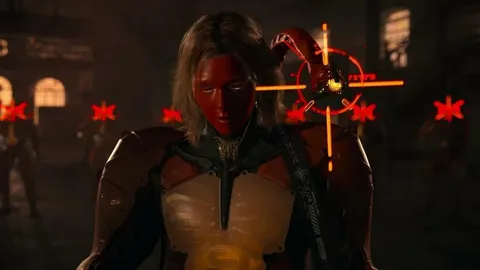
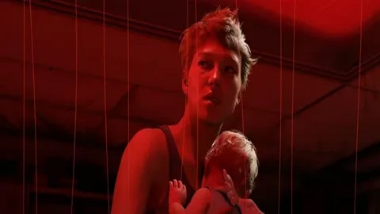
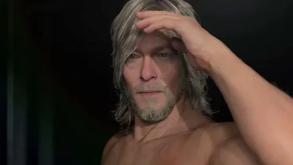
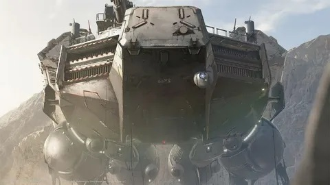

2023 · PS5, PC
DS 2 - это вторая часть Death Stranding Хидео Кодзимы, продолжающая события оригинальной игры. Игроки вновь могут встретиться с Фрэджайл, Сэмом Бриджесом и другими ключевыми персонажами первой части. События сиквела разворачиваются спустя некоторое время после финала оригинальной игры.
  
Показ игры стал одним из самых громких и интересных на всей церемонии TGA. Кодзима вновь заставил игроков копаться в деталях и пытаться понять, что же будет происходить в игре. Конечно, такого бурного обсуждения, как во времена анонса первой части, нет, но пищу для размышлений геймдизайнер подкинул.
  